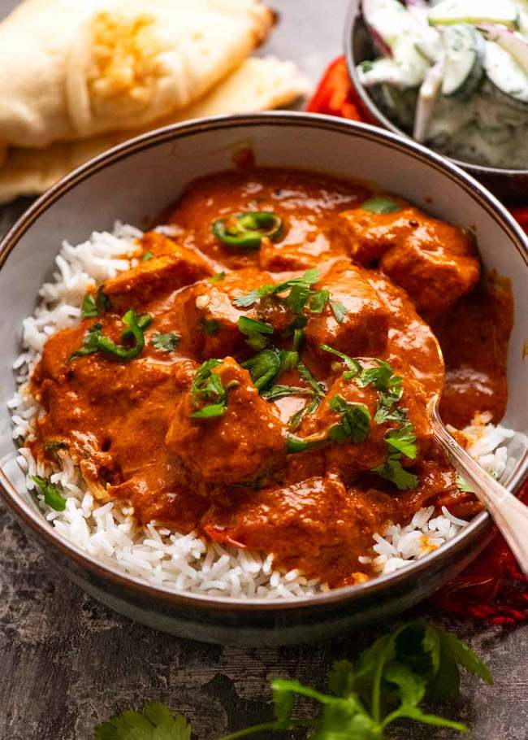

Fish curry recipe

Description
This Goan Fish Curry recipe is marginally more involved than most of the basic homestyle and online recipes you’ll see which typically have thin sauces and lack real depth of flavour in the sauce. This version specifically aims to achieve the same character and layers of flavour like you get at good Indian restaurants.
Specifically, this is a copycat of Malabar South Indian Restaurant in Crows Nest, Sydney, a long standing institution known for its excellent authentic Southern Indian food!
Ingredients
- Kashmiri chilli
- Fenugreek
- Black mustard seeds
- Coconut milk
Steps
-
Curry paste first – put it all in a jug that the blender stick fits into (I hope you’ve still got the milkshake container yours came with!) then blitz away. Use water to help it blitz – otherwise it’s too dry;
- Blitz until the onion is puree – it won’t take much longer than 10 seconds, there’s nothing hard in this curry paste;
- Cook off the curry paste – this is to make the spice flavours bloom and cook the onion, garlic and ginger. Also, to cook out the water that we added to help the paste puree;
- Cook off tomato paste – next, we add the tomato paste and tomato pulp/puree, and cook that down to as well to get rid of excess water;